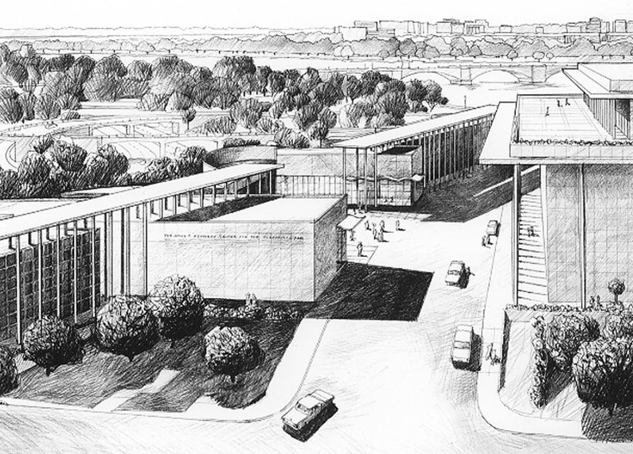

EXPANSION PROPOSAL: JOHN F. KENNEDY CENTER WASHINGTON, DC Exhibited: 1999 National Building Museum The design proposes a new 1200 ft. long structure, adjacent to the Kennedy Center to house performance spaces, offices and parking. A key feature is a dramatic new entry plaza, designed to function as an outdoor festival space. back |
 | ||